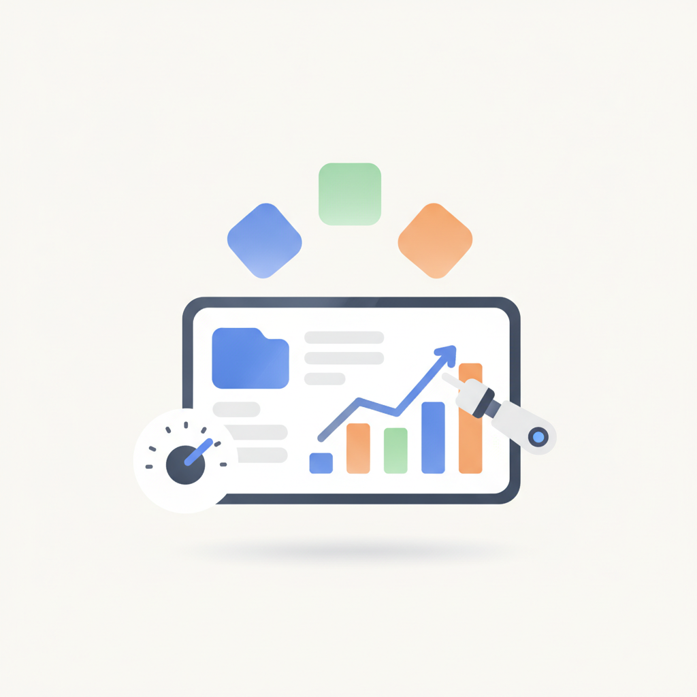
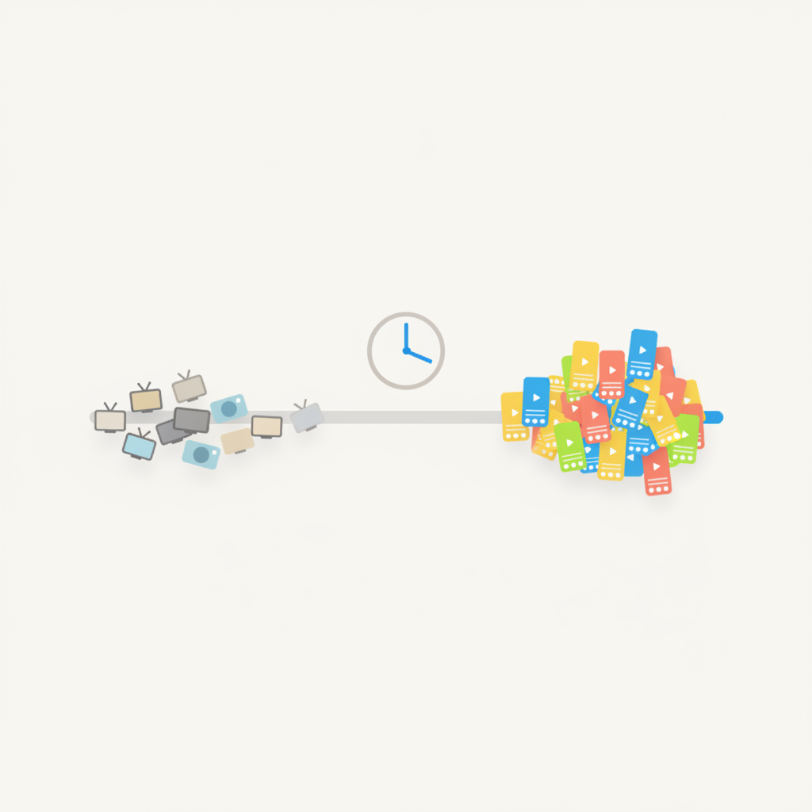
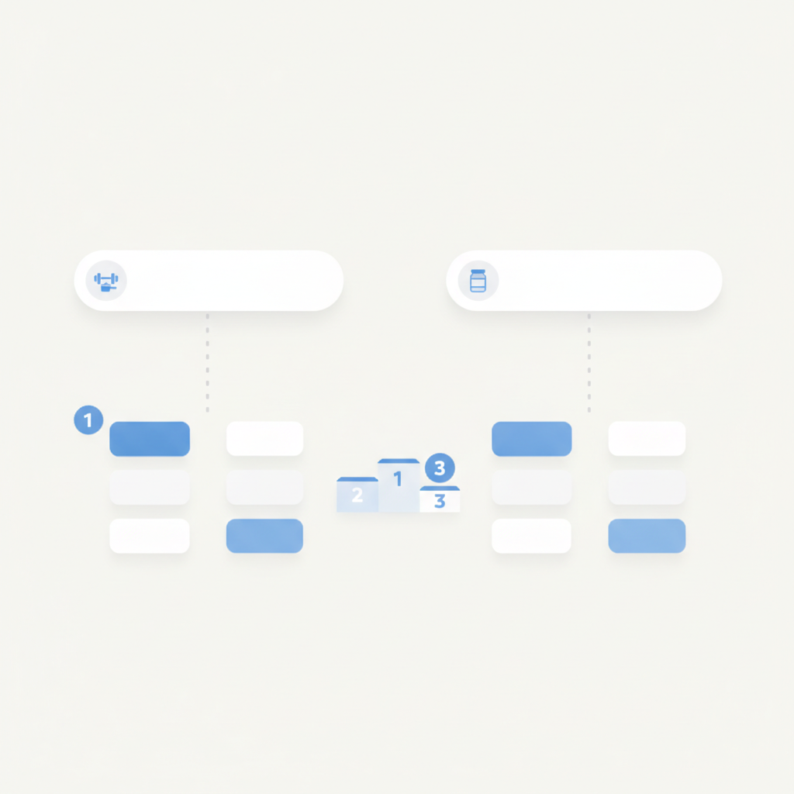
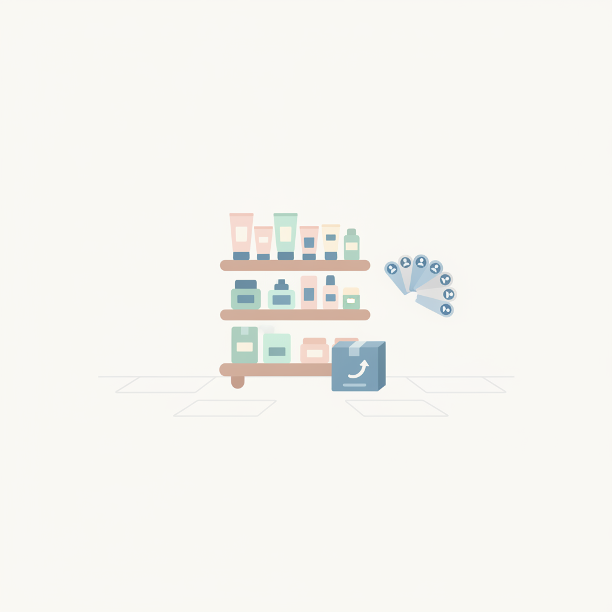
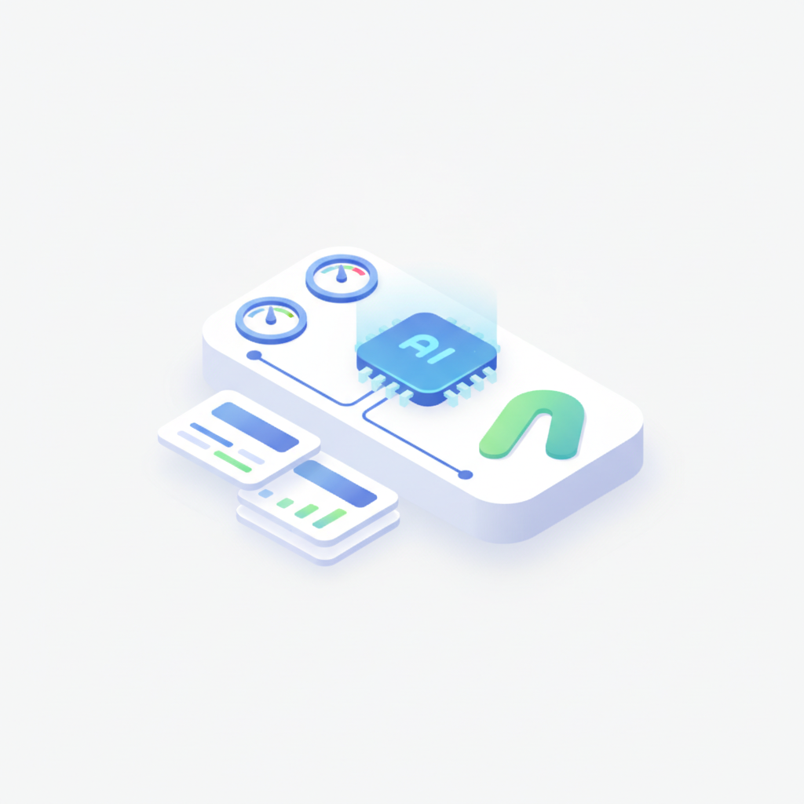
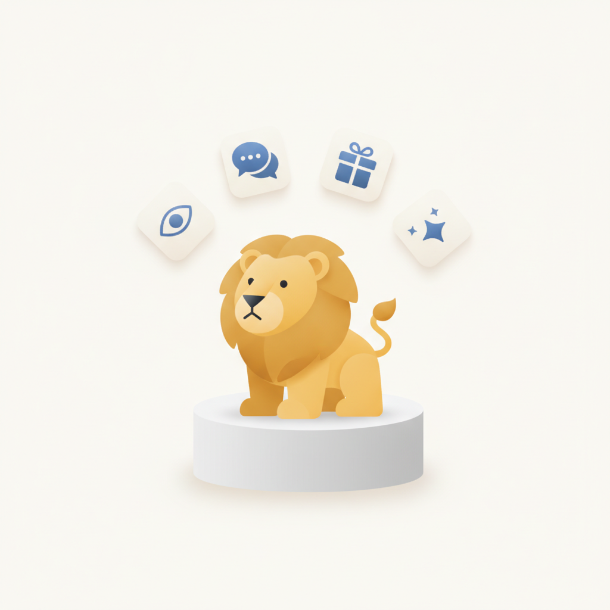
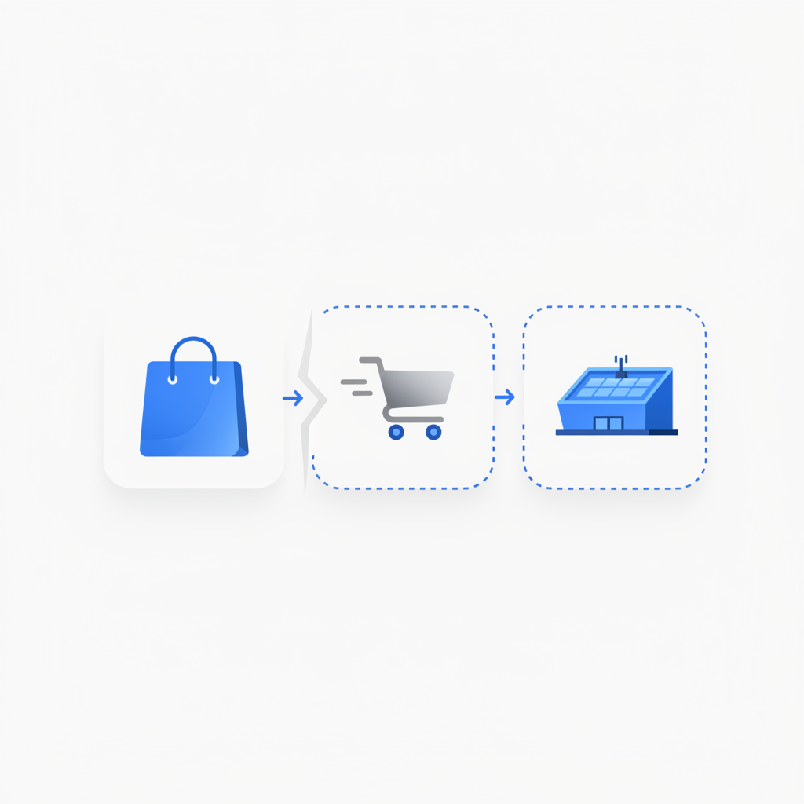
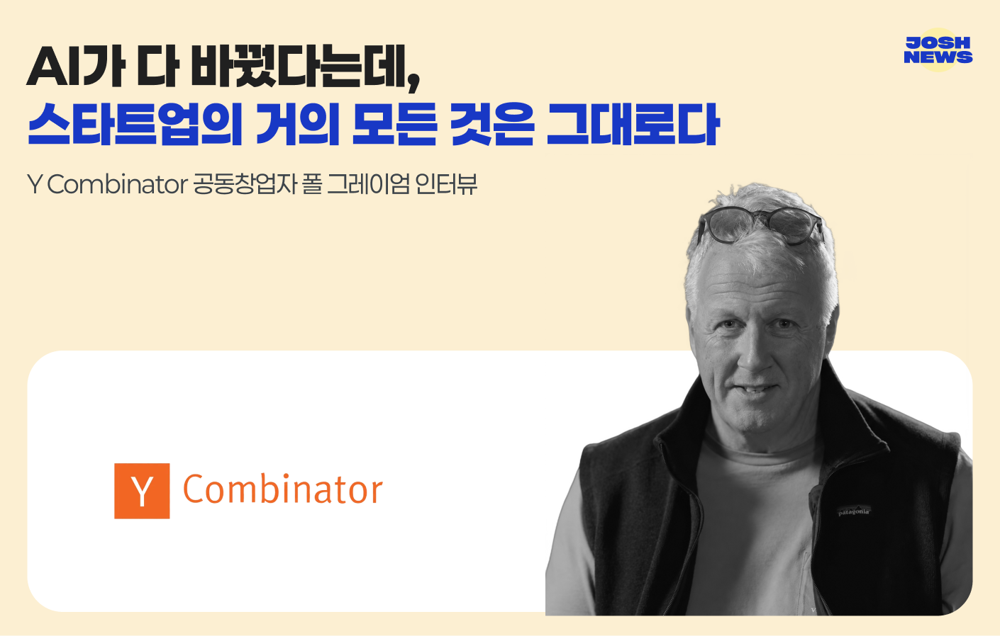

안녕하세요! 수요일 마케팅 소식 전해드립니다 😊 오늘은 칸라이언즈 2026 크리에이티비티 리포트 이야기가 특히 흥미롭습니다. AI가 '무엇이 진짜인가'라는 기준 자체를 흔드는 시대에, 세계 최고의 크리에이티브들이 택한 방향은 오히려 투명성이었다는 점이 인상적입니다. 기술이 정교해질수록 브랜드가 어떤 의도로, 어떤 방식으로 만들었는지를 숨기지 않고 드러내는 것이 신뢰의 핵심 조건이 되고 있다는 흐름은, 캠페인을 기획하거나 크리에이티브 방향을 잡는 분들이라면 꼭 짚어두실 만합니다.
미디어 소비 지형 변화도 오늘 챙겨두시면 좋겠습니다. 2026년 기준으로 유튜브·틱톡·Meta 계열 플랫폼 등 크리에이터 플랫폼의 이용 시간이 라이브 TV와 구독형 스트리밍을 합친 수치를 넘어섰다는 데이터는, 광고 예산과 콘텐츠 전략을 어디에 집중해야 하는지를 다시 정리하게 만듭니다. 동시에 AI 검색에서 '프로틴'이냐 '단백질보충제'냐처럼 검색어 하나에 따라 AI 추천 1위 브랜드가 달라진다는 브랜딥의 실험 결과는, SEO를 넘어 AI 안에서 브랜드가 어떻게 언급되는지를 관리하는 일이 더 이상 미룰 수 없는 실무 과제가 됐음을 보여줍니다.
한 주의 중반, 오늘도 현장에서 바로 써먹을 인사이트 가득한 하루 되시길 바랍니다! 🚀

1AI가 광고 제작을 넘어 미디어 기획·입찰·타기팅·가격 결정·성과 최적화까지 관여하면서 광고 운영 방식이 근본적으로 변화하고 있다. 가트너에 따르면 현재 광고 플랫폼을 통해 집행되는 광고비는 전 세계 광고비의 절반 이상인 최소 6,000억 달러에 달하며, 2028년에는 70% 이상을 차지할 전망이다. 시장이 3개 주요 사업자에 집중된 만큼, 플랫폼 자동화를 어디까지 수용하고 어떤 영역을 직접 통제할지에 대한 전략적 판단이 마케터의 핵심 역량으로 부상하고 있다.
›
2미국 소비자의 이용 시간에서 유튜브·틱톡·페이스북·인스타그램 등 크리에이터 플랫폼이 라이브 TV와 구독형 스트리밍을 합친 시간을 초과한 것으로 나타났다. 소비자 조사 플랫폼 어테스트(Attest)의 조사에서는 광고를 건너뛸 수 없더라도 다른 곳을 보거나 음소거하는 소비자가 적지 않아, 단순 노출만으로는 실질적인 주목을 확보하기 어렵다는 점이 드러났다. 미디어 예산 배분과 크리에이터 플랫폼 중심의 어텐션 전략 재설계가 시급한 과제임을 보여준다.
›
3AI 검색 브랜드 노출 측정 플랫폼 브랜딥(BRANDEEP)이 ChatGPT·퍼플렉시티·제미나이 3개 생성형 AI에 중립 질문 100개씩을 실행한 결과, '프로틴'과 '단백질보충제'라는 검색어에 따라 가장 먼저 추천되는 브랜드 1위가 달라지는 것으로 나타났다. 소비자가 같은 제품을 어떻게 표현하느냐에 따라 AI 추천 순위가 달라진다는 의미로, 생성형 AI 시대의 SEO 전략이 기존 키워드 최적화와는 다른 접근을 요구함을 시사한다.
›
4K뷰티 리뷰 커뮤니티로 출발한 피키(Picky)는 미국 틱톡샵 파트너(TSP)로서 샵 운영·어필리에이트 관리·물류까지 담당하며 틱톡샵 대행 시장에서 생존한 몇 안 되는 업체 중 하나로 자리잡았다. 2023~2024년 우후죽순 뛰어들었던 대행사 상당수가 철수한 반면, 피키는 마이크로 인플루언서 풀과 커뮤니티 기반 신뢰를 바탕으로 차별화에 성공했다. 미국 틱톡샵 진출을 검토하는 K뷰티·K콘텐츠 브랜드에게 현지 파트너 선별 기준과 운영 구조를 점검하는 데 유용한 사례다.
›
5디지털 마케팅 기업 플레이디가 네이버와 협력해 AI 기반 광고 운영 솔루션 'ADInsight(애드인사이트)'를 구축·제공했다. ADInsight는 플레이디의 AI 통합 광고 플랫폼 '올잇(All it)' 기술을 네이버 환경에 맞게 자체 개발한 솔루션으로, 네이버 직접 운영 광고주의 광고 운영 효율을 높이는 데 활용된다. 네이버 광고 플랫폼 내 AI 자동화가 본격화되는 신호로, 광고주와 대행사 모두 네이버 AI 광고 솔루션 활용 전략을 재점검할 필요가 있다.
›
6칸라이언즈가 발간한 '크리에이티비티 리포트 2026'에 따르면, AI가 무엇이 진짜인지를 흔드는 시대에 세계 최고의 크리에이티브들은 오히려 투명성을 높이고 소비자를 이야기 안으로 끌어들이는 데 집중했다. 일방적 메시지 전달 대신 소비자의 참여를 유도하고, 시간을 빼앗는 것이 아니라 그만한 가치를 돌려주는 방향이 핵심 흐름으로 꼽혔다. 글로벌 크리에이티브의 방향성을 캠페인 기획에 반영하려는 마케터에게 실질적 기준점이 될 전망이다.
›
7SSG닷컴은 신세계와 이마트를 합친 통합몰로 기대를 받았지만 두 브랜드의 정체성을 하나로 묶지 못한 채 신세계몰 분리로 이어졌다. 계열 분리 이후 신세계를 대체할 대표 브랜드를 찾을 수 있을지가 핵심 과제로 부상하며, 스타필드가 오프라인 거점으로서의 역할을 이어받을 가능성이 논의되고 있다. 대형 유통 그룹의 브랜드 재편 과정은 온·오프라인 통합 커머스 전략을 고민하는 리테일 마케터에게 중요한 참고 사례가 된다.
›
Y Combinator 공동창업자 폴 그레이엄 인터뷰
브랜드 진단부터 지금 당장 해야 할 우선순위까지,
30분 무료 상담에서 함께 정리해드려요.
이미 수십 개 브랜드가 상담받았습니다.
내 브랜드처럼, 함께 고민하는 팀원의 마음으로 봅니다.
스타트업 대표·마케팅 담당자를 위한 30분